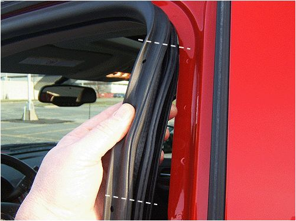
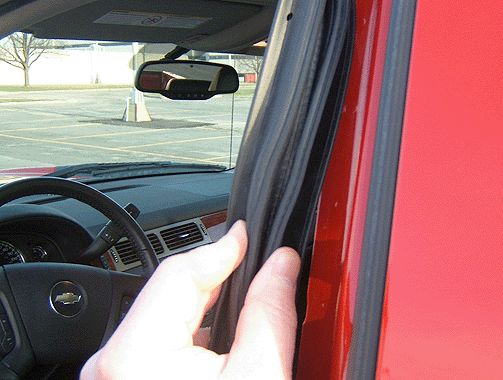

Body - Side Door Body Mounted Weatherstrip Replacement
INFORMATIONBulletin No.: 09-08-64-012C
Date: November 22, 2010
Subject: Information on Side Door Body Mounted Primary Weatherstrip Replacement
Models:
2007-2011 Cadillac Escalade, Escalade ESV, Escalade EXT
2007-2011 Chevrolet Avalanche, Silverado, Suburban, Tahoe
2007-2011 GMC Sierra, Yukon, Yukon XL, Yukon Denali, Yukon Denali XL
Supercede:
This bulletin is being revised to communicate feedback received from engineering information and add the 2011 model year. Please discard Corporate Bulletin Number 09-08-64-012B (Section 08 - Body and Accessories).
Some customers may comment about side door wind noise, water leaks or door fit concerns. These concerns may appear to be related to the body mounted primary door opening weatherstrips.
As a result of feedback received from engineering information, we have found that many replacements of the primary door opening weatherstrip are for issues not related to the primary door opening weatherstrip. The instructions below are a guide to help "root cause" the customer's concern and obtain the proper direction for repair.
Recommendation
Note:
If the seal is properly installed, it will not cause a Windnoise. If mis-installed, the seal could create a Windnoise that can be corrected by re-installing the seal.
If the condition is for Windnoise, please view the training courses on this subject and follow the proper diagnostics outlined in courses 10210.01D 2010 SKH Seminar Jan Emerging Issues,.02D (Feb),.03D (March) (3 Parts) (Emerging Issues programs available to U.S. dealers only). If the condition is specific to an itch noise, refer to Corporate Bulletin Number 06-08-64-035F to correct that concern.
If diagnosing a water leak, please follow information supplied in Corporate Bulletin Number 09-08-57-002B.

For door fit concerns, or if the seal is loose or exhibits a poor appearance, inspect for even retention around the door. If the seal pulls off too easily, the channel crimp may be wide/loose as shown between the dashed lines in the graphic above.

Remove the seal only in the affected area. Inspect the seal's channel crimp and adjust accordingly by pinching the channel together for a tighter retention. Reinstall the portion of the seal that was removed.
Warranty Information
For vehicles repaired under warranty, use the appropriate labor operation found in the Labor Time Guide (LTG).

Disclaimer